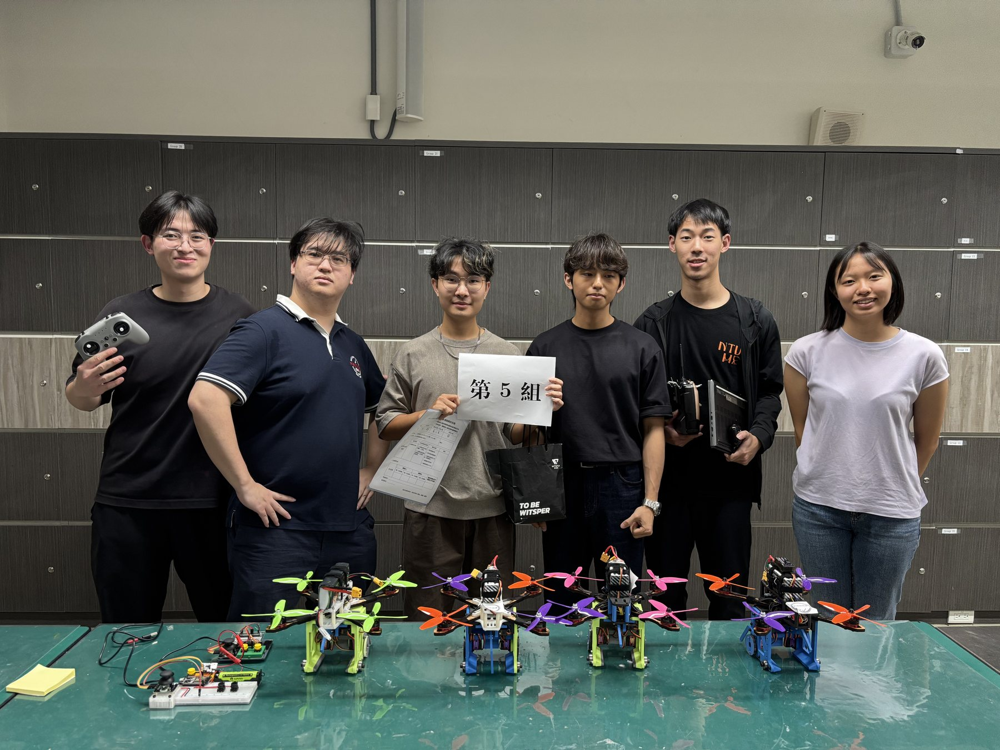
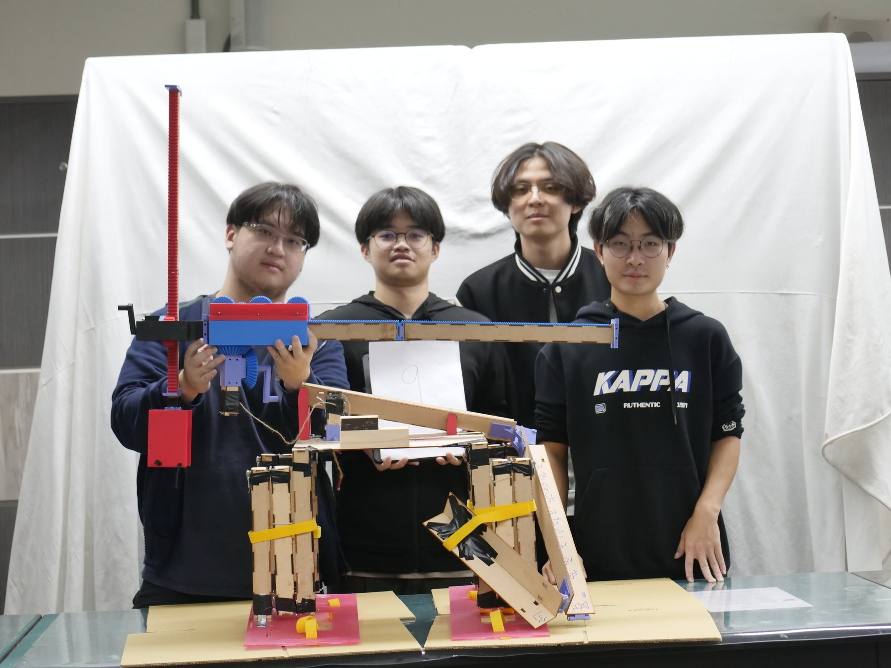
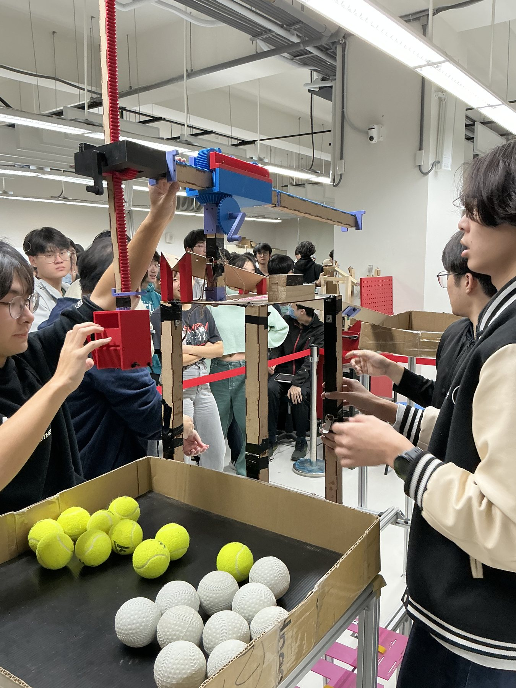
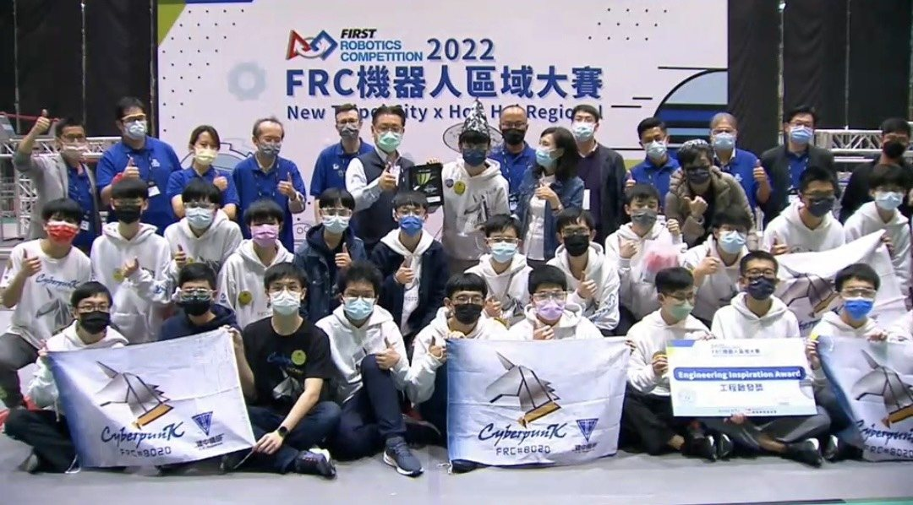
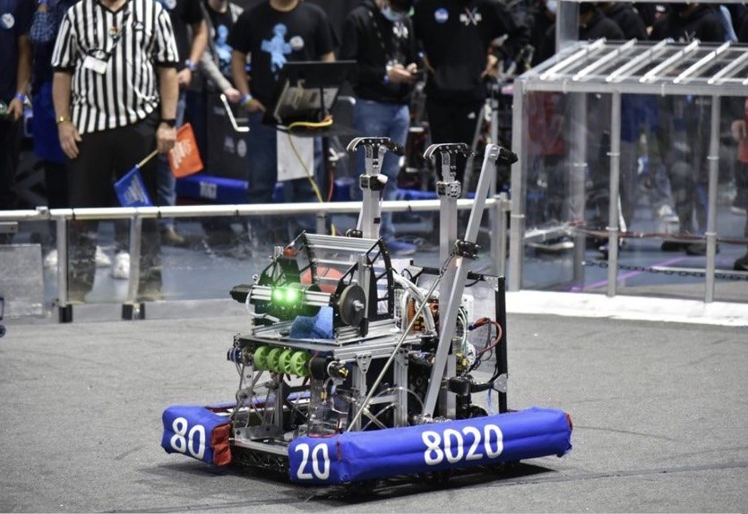

National Taiwan University Mechanical Engineering | Robotics Systems Portfolio
CHENG-
HSUAN LEE
Robotics systems applicant who can make physical robots work: mechanism design, fabrication, embedded control, experimental debugging, and team execution under real test pressure.
Why CHENG-HSUAN Stands Out
A robotics applicant professors can understand in one minute.
My strongest signal is not one isolated skill. It is the ability to turn messy physical constraints into working robot systems that other people can test, learn from, and improve.
Profile
I turn ambiguous robot problems into buildable systems and testable decisions.
My strongest projects sit at the boundary between mechanical design and control: a quadruped robot dog, a ball-transfer quadcopter, a deployable transfer mechanism, and FRC competition robots. I repeatedly took roles where hardware, code, testing, and team coordination had to work together before a deadline.
The pattern across my work is simple: define the physical constraint, build a repairable prototype, isolate failure modes with tests, and turn the results into the next design decision. That is the engineering habit I want to bring into graduate-level robotics research.
Featured Engineering Work
Four proof points for systems-level robotics ability.
Each project is written for quick review: what the problem was, what I contributed, and what the system proved in testing, evaluation, or competition.
Microprocessor Controlled Systems | Team Lead
Quadruped Robot Dog
Built a legged-robot stack that connected 3D-printed mechanical design, servo layout, inverse-kinematics reasoning, and ESP32-based embedded control.
Review signal: I connected legged-robot mechanics, servo calibration, IK thinking, and embedded control instead of treating them as separate tasks.
Read robot dog case study
Demo media reserved
Robot gait, standing behavior, or gesture demonstration
Build media reserved
Body design, wiring, or leg module close-up
Practice of Mechanical Engineering | Team Lead
Quadcopter Ball-Transfer Drone
Led a full drone mission build from airframe and payload architecture to thrust testing, electronics integration, flight debugging, and final-run risk control.
Review signal: this was a reference-quality course build that made our architecture, testing approach, and integration decisions useful to other teams.
See drone system breakdown
Test media reserved
Thrust testing, airframe analysis, or electronics layout
Machine Design Theory | Team Lead
Foldable Ball Transfer Mechanism
Designed a deployable mechanism where packaging, stiffness, assembly sequence, and repeatable ball transfer all mattered at the same time.
Review signal: I turned a strict packaging constraint into a buildable mechanism architecture, then kept iteration grounded in fabrication reality.
Read mechanism design case study

CKHS Robotics Team | Programming and Strategy Lead
FIRST Robotics Competition
Built competition engineering judgment through programming, scouting, strategy, and mechanism prototyping in a high-pressure international robotics environment.
Review signal: I learned to make robotics decisions when software, field strategy, live data, driver needs, and robot limits all collide.
See FRC leadership case study

Research Fit
I want to study robots as complete physical systems, not isolated parts.
My target direction is legged robotics and robot hardware that survives real testing: actuator and gearbox design, mechanism-control integration, embedded motor communication, locomotion experiments, and the gap between simulation and physical behavior.
Legged robotics
Actuator design
Embedded control
Real-world testing
Capabilities
A robotics applicant who can design the hardware, write the code, and debug the test.
Mechanical Systems
Mechanism design, 3D printing, machining, CNC, soldering, engineering drawings, serviceability planning, and strength-weight tradeoffs.
Embedded Control
Arduino, ESP32, MATLAB, Simulink, C++, Python, servo control, actuator communication, calibration, and practical control implementation.
Testing and Debugging
Thrust testing, vibration and resonance diagnosis, signal-chain debugging, motion analysis, experimental records, and failure-mode isolation.
Team Leadership
Led hardware/software integration, assigned tasks under deadlines, prepared fallback plans, and translated uncertain test data into clear next actions.
Competitions and Recognition
Evidence that I can perform when the robot has to work in public.
FIRST Robotics Competition
- 2022 Sacramento Regional - Finalists and Industrial Design Award
- 2022 New Taipei City x Hon Hai Regional - Engineering Inspiration Award
- 2022 Carver Championship Division - Houston Championship qualification
- 2023 Los Angeles Regional - Excellence in Engineering Award
- 2023 San Diego Regional - Excellence in Engineering Award
Additional Competition Experience
- 2nd ISS Kibo Robot Programming Challenge Taiwan Preliminaries - Merit Award
- 58th Hsinchu County Science Fair, Biology Division - Second Place
These experiences built the foundation for my later interest in robotics, experimental constraints, and structured technical teamwork.
Education
Mechanical engineering foundation for robotics research.
Department of Mechanical Engineering, National Taiwan University
Selected coursework, ordered by relevance to robotics design, fabrication, and control: Microprocessor Controlled Systems, Automatic Control, Applied Electronics, Mechanism, Machine Design Theory, Engineering Graphics, Practice of Mechanical Engineering, Manufacturing Processes, Workshop Practice, Mechanical Engineering Laboratory I/II, Engineering Materials, Strength of Materials, Dynamics, Numerical Analysis, Fluid Mechanics, Thermodynamics, and Heat Transfer.
Taipei Municipal Chien Kuo High School
Developed early robotics experience through CKHS Robotics Team, FRC programming, strategy, scouting, and regional/international competition work.
Application Materials
Resume and supporting documents will be added before application submission.
This section is prepared for the final application packet. The public site currently focuses on the project narrative and will link selected documents after final review.
For a concise academic and project summary.
For robot dog, drone, mechanism, and FRC supporting records.
For additional evidence when a reviewer wants deeper documentation.
Contact
Open to graduate research opportunities in robotics and mechanical systems.
Based in Taipei, Taiwan, and available for research conversations, portfolio review, and graduate application correspondence.
Name
CHENG-HSUAN LEE
Taipei, Taiwan